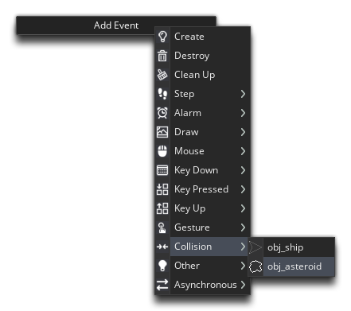

We need to add another event to our player object "obj_ship", so open that now and add a Collision Event between the ship object and the asteroid object "obj_asteroid":

We could instead add a collision event to the asteroid object to look for collisions between them and the player ship, but in general you want to have the instance there is least of (in this case "obj_ship") do the checking, as less checks means better performance, so having one instance checking for a collision is better than having 10 instances checking for the same collision.
In this event we're simply going to add this code:
instance_destroy();
We'll add more things to this event later to control lives and stuff, but for now all we're doing is destroying the instance (removing it from the game room), and if you test the game now, you'll see that the ship "disappears" (is destroyed) when it collides with an asteroid.
Click the "Next" button to continue...